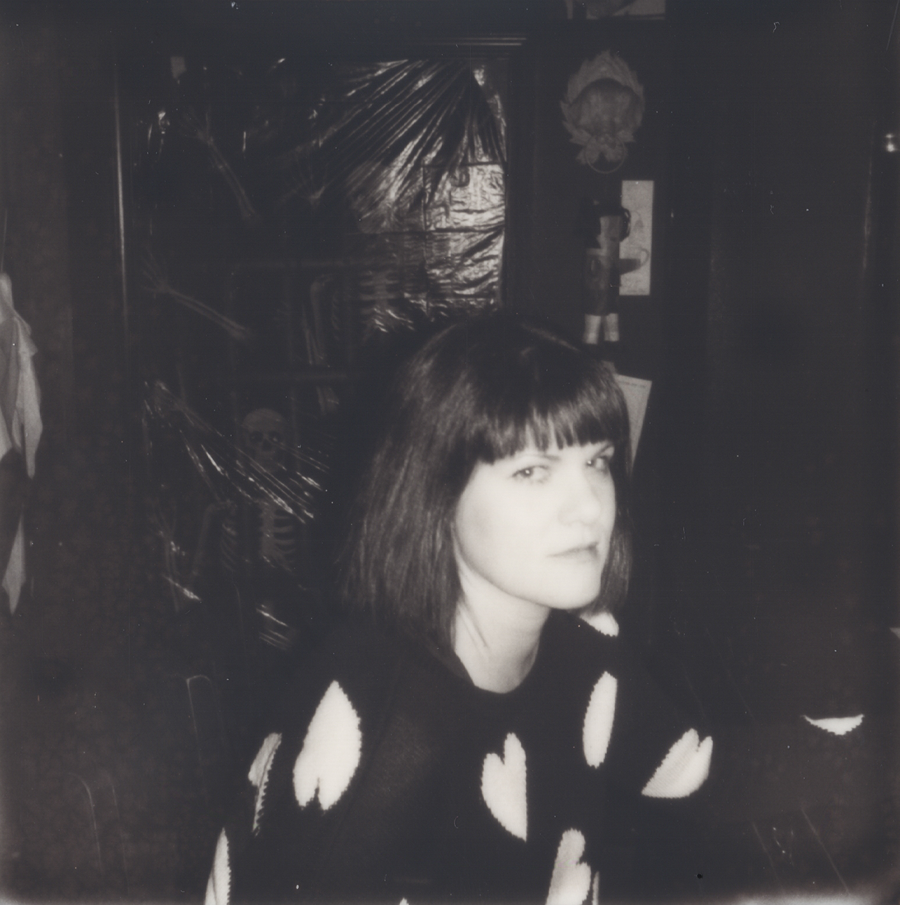
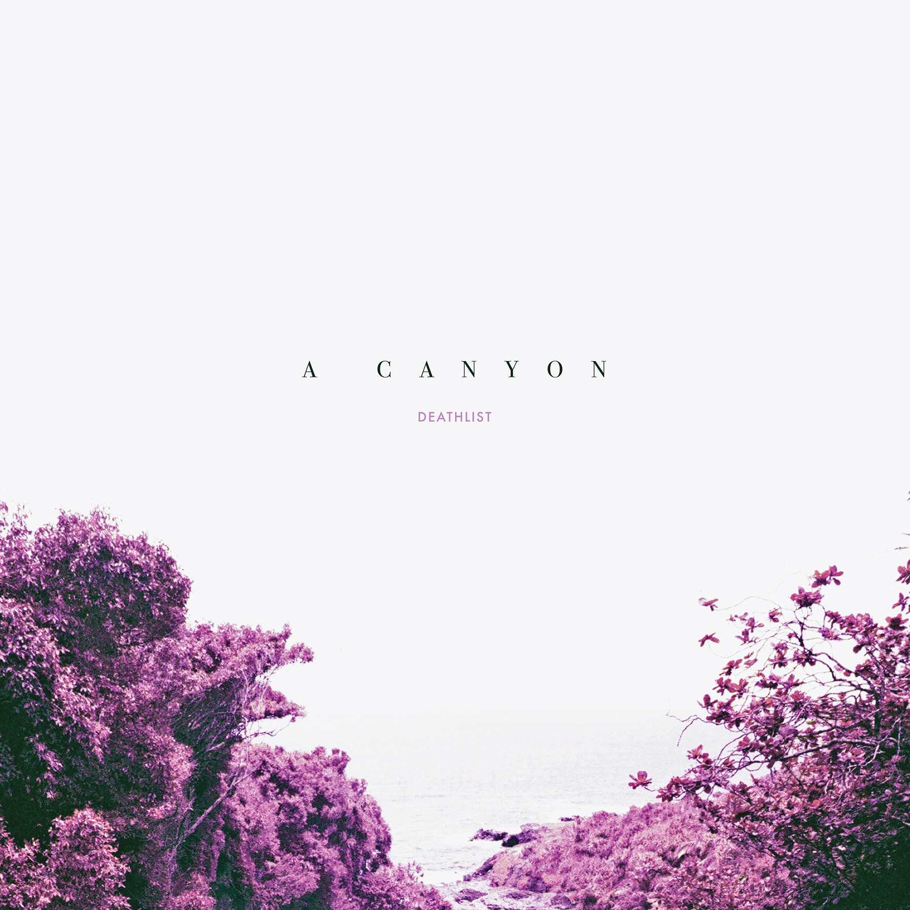

Deathlist
On 2018’s stark and sorrowful FUN, Deathlist’s Jenny Logan wrestled with the shattering loss of her best friend over ten tracks of dark post-punk that earned comparisons to PJ Harvey, Nine Inch Nails and Siouxsie & the Banshees. The Portland Mercury called it a “challenging, uncomfortable, and completely immersive” album, while Willamette Week praised its “subtle brilliance and...impeccable distillation of influences.” Deathlist has always tilted toward the dark side--fans of The Cure’s most suffocatingly sad work will feel right at home here--but FUN was a full-on descent, and it wouldn’t have been surprising to see the wildly prolific Logan take a short break, a deep breath, a long vacation. But that is not how Deathlist works. That is not how Logan lives. And so we have A Canyon, Logan’s third full-length as Deathlist in as many years and her most expansive and varied collection yet. From the dance-punk of the title track to the slow-burning melancholy of “Dream Legs,” A Canyon finds Logan clearing some space to demonstrate her many talents. It’s an album that begs bodies to move and minds to wander and hearts to break. While FUN found Logan penned in by the density of grief, A Canyon documents the aftermath of mourning, a time during which Logan had to figure out how to live with absence. It was during this difficult stretch that she began thinking about past lives and soul mates, concepts that poke holes in the black wall of death and admit a chilly kind of consolation. “FUN was all about loss and grief, which is hard, but in some ways it’s easier to just dump a bunch of feelings into an album than to try and think about living on after a big tragedy,” Logan says. “I think the vehicle of past lives made it easier for me to think about living on, because it’s comforting to think ‘well this all has happened before.’” A Canyon is a ghost story, but Logan is the haunted one as well as the one doing the haunting. On “Repeater,” she imagines herself “[coming] to a shore from a trench in a war” before imploring a loved one to come back to her, as if she has reached the far edge of one version of existence and will not leap into the next one until her soul mate joins her. The album is full of these eerie echoes, faint sparks of something ineffably strange and true. In Logan’s stricken cosmology, past lives are not escape hatches into romantic or tragic ideals, but resonances one finds in other people. And these are the people who make us feel like we are connected to something timeless, something that stretches back to the beginning of everything. And what happens when we lose one of those people? When we lose ourselves? We become defined by that loss until we find that echo again, touch that spark again. There might not be a wholeness to return to. There might not be a person to search for in the next life, if there is a next life. But we can chase the mysterious truth in our minds and we can dream beyond time, at least for a little while. A Canyon is that little while.

Deathlist - A Canyon, LP